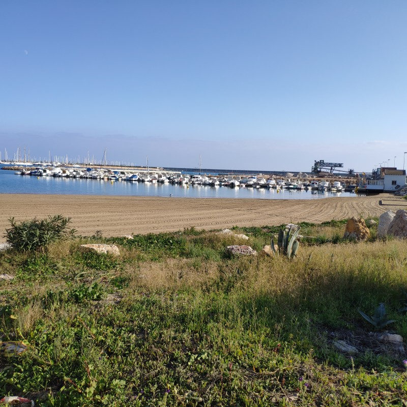
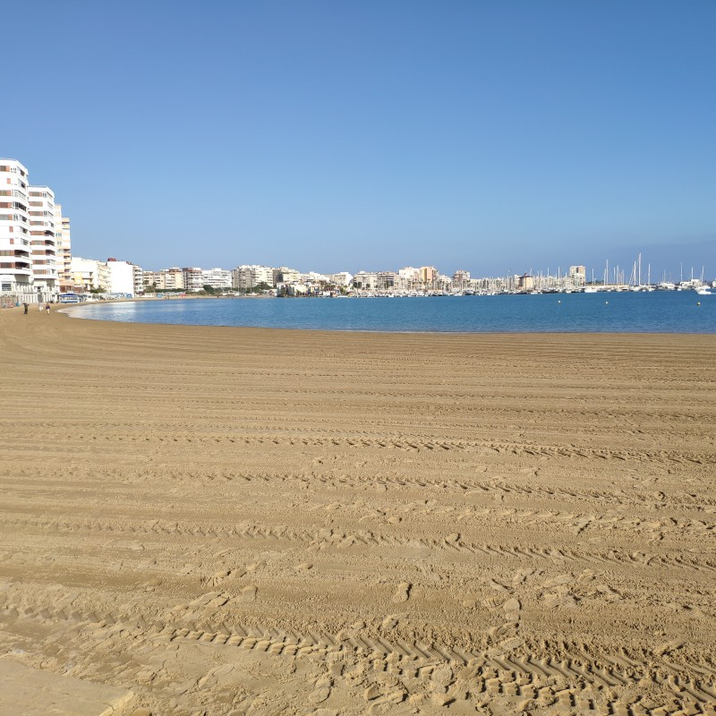
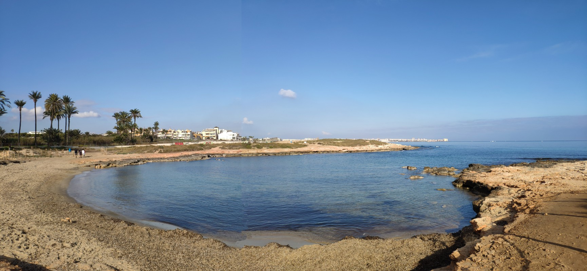
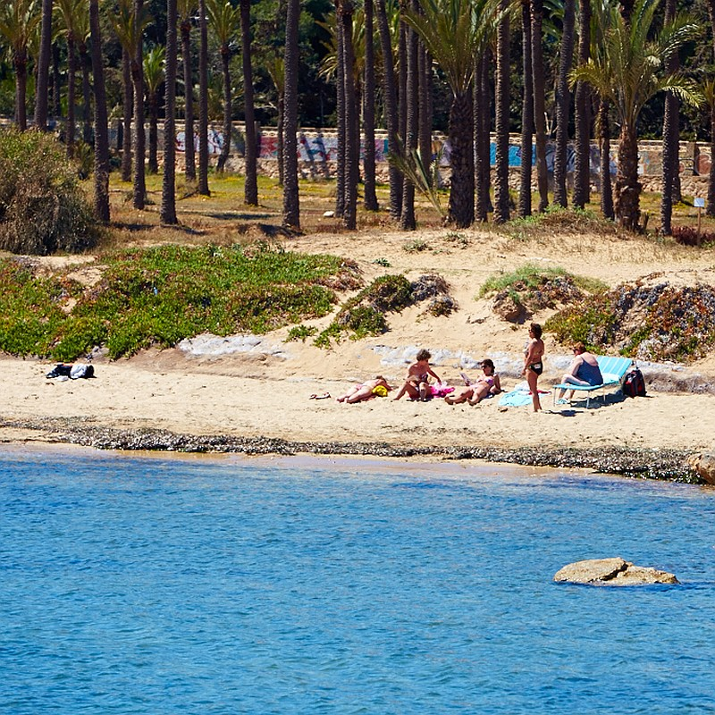

Playa de la Mata
Playa de la Mata is the largest beach in Torrevieja, 2363 m long and 47 m wide. On the beach there are eight volleyball courts, one football field, and water bikes, in summer there is a dozen or so beach bars.
Playa de la Mata is the largest beach in Torrevieja, 2363 m long and 47 m wide. On the beach there are eight volleyball courts, one football field, and water bikes, in summer there is a dozen or so beach bars.


Playa de los Locos
Playa de los Locos (beach of madmen) named after a former hospital in the vicinity. It is a sandy beach at the coast adjacent to Playa del Cura, 760 m long and 27 m wide. Nearby many parking places, restaurants and bars. It may get crowded.
Playa de los Locos (beach of madmen) named after a former hospital in the vicinity. It is a sandy beach at the coast adjacent to Playa del Cura, 760 m long and 27 m wide. Nearby many parking places, restaurants and bars. It may get crowded.


Playa del Cura
Playa del Cura is considered one of the best beaches in town. It is smaller than Playa de los Locos (375 m long and 27 m wide). May get crowded.
Playa del Cura is considered one of the best beaches in town. It is smaller than Playa de los Locos (375 m long and 27 m wide). May get crowded.
_-_panoramio.jpg")

Playa del Acequion
Playa del Acequion is in fact an extention of Playa de los Náufragos on the north-east side of the salt wharf, within the port.
Playa del Acequion is in fact an extention of Playa de los Náufragos on the north-east side of the salt wharf, within the port.


Playa de los Náufragos
Playa de los Náufragos, next to the marina and port is another popular sandy beach. It is also very close to the town, easily reached from the center of Torrevieja, which is the reason why it is, alas, often crowded. It is long and wide – 325 m long and 77 m wide. This Blue Flag beach provides a bit of shade thanks to palm trees on the sand, there is also a small water park for children there.
Playa de los Náufragos, next to the marina and port is another popular sandy beach. It is also very close to the town, easily reached from the center of Torrevieja, which is the reason why it is, alas, often crowded. It is long and wide – 325 m long and 77 m wide. This Blue Flag beach provides a bit of shade thanks to palm trees on the sand, there is also a small water park for children there.


From Náufragos to Cala Piteras
One may take a walk (about 2 km) along a locally diversed seaside, part sandy, part gravelly, part rocky and part grassy. Not far from the appartment there is a convenient ladder descending to the sea.
A perfect place for snorkling and admiring fish. Here one may sunbathe on beach-chairs on the lawn.
One may take a walk (about 2 km) along a locally diversed seaside, part sandy, part gravelly, part rocky and part grassy. Not far from the appartment there is a convenient ladder descending to the sea.
A perfect place for snorkling and admiring fish. Here one may sunbathe on beach-chairs on the lawn.


Playa Cala Ferris
On the southern end of Torrevieja there is a less known small beautiful beach with palm trees, small dunes and cristal clear water. At dawn or at dusk one hears squawking parrots there. It is a ideal place for swimming and snorkling. Various kinds of fish may be seen in the clear waters.
On the southern end of Torrevieja there is a less known small beautiful beach with palm trees, small dunes and cristal clear water. At dawn or at dusk one hears squawking parrots there. It is a ideal place for swimming and snorkling. Various kinds of fish may be seen in the clear waters.

Cala Piteras
It is not that big (123 m long and 15 m wide). Great for swimming and snorkling. It has got one of the most impressive posidonia underwater meadows in the vicinity. The posidonia grass which is an important part of the ecosystem grows best in pure water, so if you notice it, it means you are swimming in one the best parts of the Mediteranean Sea.
It is not that big (123 m long and 15 m wide). Great for swimming and snorkling. It has got one of the most impressive posidonia underwater meadows in the vicinity. The posidonia grass which is an important part of the ecosystem grows best in pure water, so if you notice it, it means you are swimming in one the best parts of the Mediteranean Sea.
